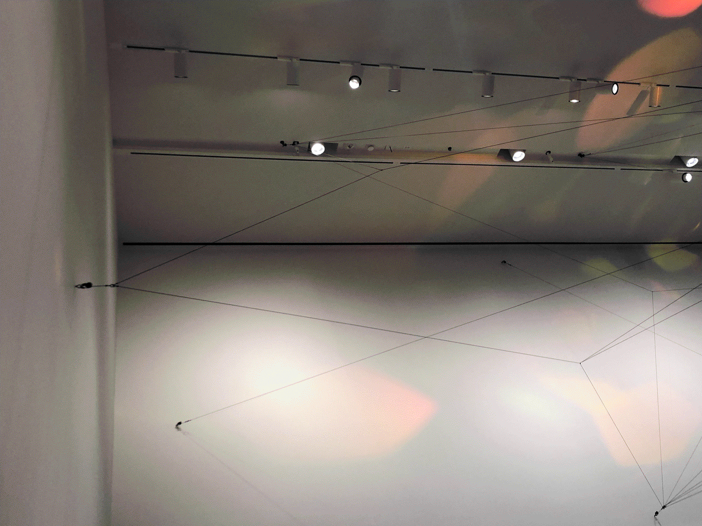
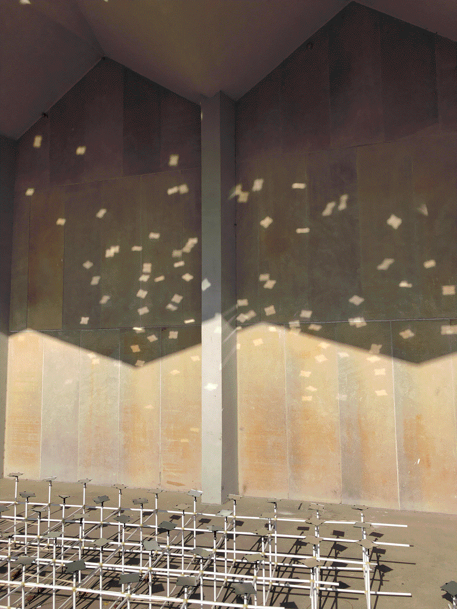

Fall 2021
dimensions variable
An homage to two installation pieces around the Sam Fox School, this interactive alphabet is an exercise in modular design and relationships between part and whole. The alphabet’s name comes from refringere, Latin for “to break up or open, to refract.” I wanted to capture the delicate quality of light that I’d been able to appreciate in these familiar campus spaces, having encountered these artworks across different moments of the day.
 While I had designed a similar set of modular letters a year prior, the chief challenge for this project was articulating and animating the Latin alphabet in a concise way wherein small, gradual changes could build on each other to bring about unique, generative visual compositions.

With the added requirement that this alphabet be entirely coded from HTML <div> elements (with CSS styling applied), I soon realized that my prior subtractive approach to designing letterforms would be troublesome. Ultimately I settled on a direction based on a single rectangular stroke, sheared and warped to remain legible as each individual letter.
After fine-tuning microinteractions (how do the modules react to the cursor?) and testing different transformations based on various hover states, user-generated motion works with controlled chance operations to reflect the artworks’ quiet, ethereal atmosphere.